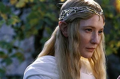
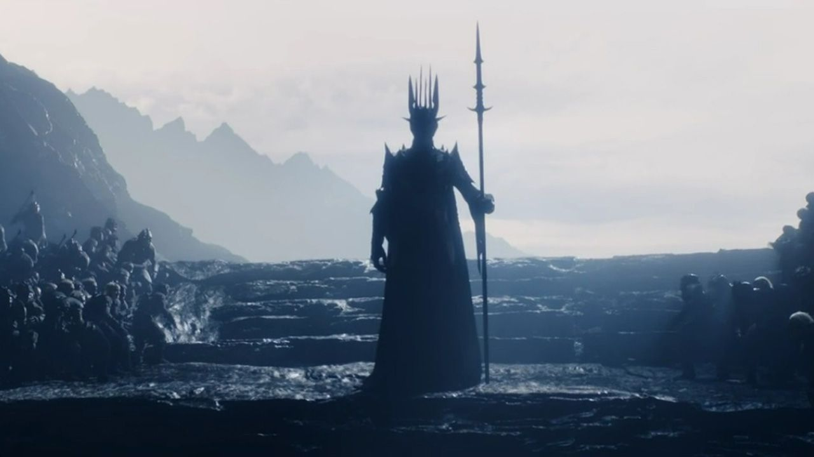
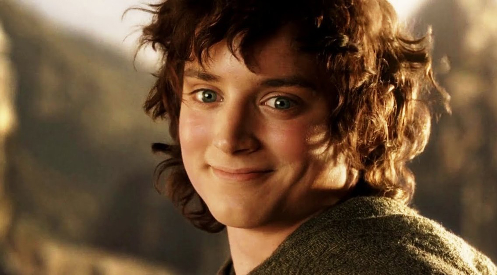
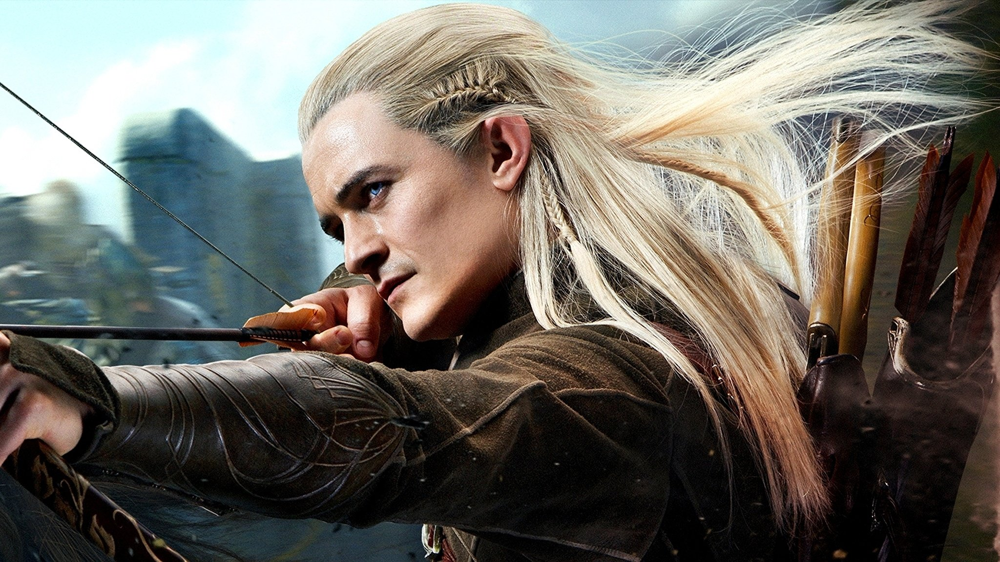
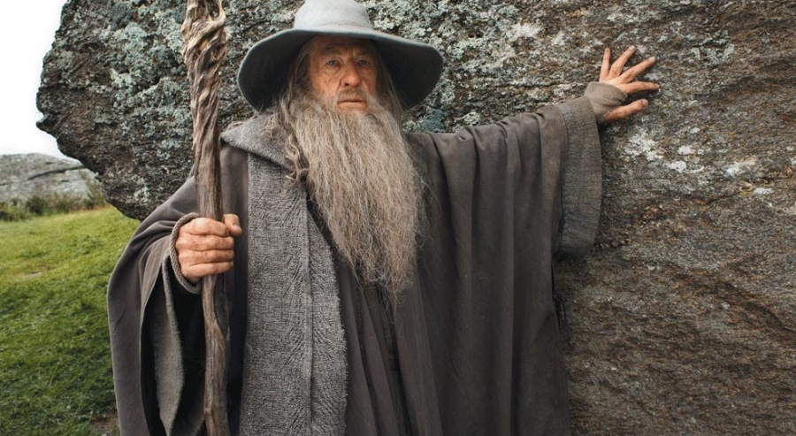
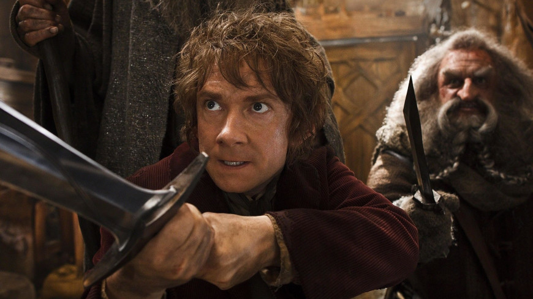
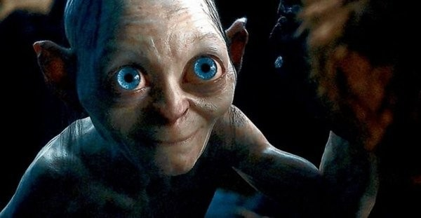

| Galadriel | |
| Ďalšie názvy: | Alathariel, Artanis, Narwen |
| Vláda: | 1981 - 3021 Т. Э. |
| Rasa: | Elf |

Sauron
Sauron (q.v. Sauron), Gorthaur Nemilosrdný, je hlavný antagonista Pána prsteňov v povesti J. R. R. Tolkiena. Sauron bol jedným z prvých duchov Maiar, ktorí sa pridali na stranu Morgotha a stali sa jedným z jeho najvernejších a najmocnejších spolupracovníkov, ale po Vojne hnevu a porážke svojho pána sa Sauron stal najväčším nepriateľom slobodných národov Stredozeme počas Druhej a Tretej éry.
| Sauron | |
| Ďalšie názvy: | Myron, Gorthaur, Annatar, Artano, Aulendil, Sigur, Necromancer,Temný lord Pán prsteňov,Pán Barad-dûru |
| Vláda: | 1600 В. N. L. - 3019 N. L. |
| Rasa: | Ainu |

Frodo
Frodo Pytlík - synovec Bilba Pytlíka,Frodo Pytlík (Frodo Baggins; preklady: Torbins, Sumnix, Bebbins) je významný hobit z Kraja, jediný syn Droga Pytlíka a Primrose Brandybuck, synovec Bilba Pytlíka. Jedna z hlavných postáv románu J. R. R. Tolkiena Pán prsteňov, ktorá v ňom zohráva kľúčovú úlohu.
Frodo sa stal strážcom Jedného prsteňa, o ktorý sa usiloval Temný pán Sauron, aby s jeho pomocou získal plnú moc. Frodo preniesol Prsteň z Kraja do Roklinky a dobrovoľne sa prihlásil, že ho prenesie ďalej do Mordoru, aby ho zničil v ohni Hory osudu.
| Frodo Pytlík | |
| Ďalšie názvy: | Maura Labingi, Iorhael, pán Podholmes |
| Názov: | Strážca prsteňa, priateľ elfov, zástupca starostu Michela Delvinga |
| Rasa: | Hobit |

Legolas
Legolas je elf zo Sindaru, syn Thranduila, kráľa lesných elfov zo Severného Lichu.
Je jedným z deviatich členov Spoločenstvo prsteňa, ktorý sa zúčastnil pochodu k Hore osudu a Vojny o prsteň. Ako jediný elf v radoch Spoločenstvo sa Legolas spriatelil s trpaslíkom Gimlim, čo bolo pre oba národy pozoruhodné.
| Legolas | |
| Ďalšie názvy: | Laicolasse , Greenleaf |
| Názov: | Knieža lesného kráľovstva |
| Rasa: | Elf |

Gandalf
Gandalf Sivý/Biely (Gandalf Sivý/Biely; variantný preklad - Gandalf) je jednou z ústredných postáv diel J. R. R. Tolkiena Pán prsteňov a Hobit alebo tam a zase späť, kde vystupuje ako múdry, mocný čarodejník, ktorý je členom Rady múdrych a pomáha slabším.
Svojou povahou pochádza z rasy Ainur a radí sa medzi malých (z hľadiska moci) anjelských duchov - Mayar, v ktorých rade bol považovaný za najmúdrejšieho. Jeho poslaním, ktorým ho poverili Valar, bolo pomôcť slobodným národom Stredozeme v boji proti Temnému pánovi Sauronovi, jednému z mocných Maiar, ktorí sa obrátili k zlu. Gandalf bol jediným z Istariho poslov, ktorému sa jeho úloha podarila, a na konci Tretieho veku sa vrátil do Neumierajúcich krajín.
| Gandalf | |
| Ďalšie názvy: | Sivá, biela Olorin, Mithrandir, Incanus, Tarkun, Grey Chlamyda, White Rider, Latspell |
| Zbrane: | palica, Glamdring (meč), Narya (prsteň) |
| Rasa: | Ainu |

Bilbo Baggins
Bilbo Pytlík (anglicky Bilbo Baggins; preklady: Torbins, Sumnix, Bebbins) je hobit z Kraja, syn Bunga Pytlíka a Belladony Tookovej, strýko Froda Pytlíka.
Zúčastnil sa výpravy na Osamelú horu pod vedením Thorina Duboshielda, počas ktorej našiel Jeden prsteň v Glumovej jaskyni a bojoval v Bitke piatich zástupov. Po návrate do Kraja Bilbo napísal Šarlatovú knihu, v ktorej opísal svoje dobrodružstvá, a adoptoval si svojho osirelého synovca Froda. Po svojich 111. narodeninách Bilbo opustil Kraje a usadil sa v Roklinke, kde doplnil svoje memoáre prekladmi z elfčiny. Po porážke Temného pána Saurona Frodo odplával do Neumierajúcich krajín a na svoju poslednú cestu vzal so sebou aj svojho starého strýka.
| Bilbo Baggins | |
| Ďalšie názvy: | Bilba Labingi Riešiteľ záhad, Strihač pavučín, Pichľavá mucha, Víťaz prsteňov, Nositeľ šťastia, Jazdec na sudoch, Lupič, Zlodej, Dieťa priateľského západu |
| Názov: | Strážca prsteňa, Priateľ elfov |
| Rasa: | Hobit |

Glum
Glum alias Sméagol (Sméagol; variantný preklad: Sméagorl) je jednou z kľúčových postáv diel Johna R. R. Tolkiena z čias, keď bol hobitom. Jedným z charakteristických znakov Gluma je jeho spôsob reči. Hovorí o sebe v prvej osobe množného čísla.
Glum je tvor malého vzrastu, mimoriadne vychudnutý a s veľkými žiariacimi očami. Jeho koža má podľa Hobita lesklú a čiernu farbu. Podľa knihy mal Glum šesť zubov (hoci v prvom filme sa uvádza deväť). Glum je pomerne silný, ale zbabelý a zákerný. V Hobitovi sa spomína, že v minulosti žil na povrchu.
| Golum | |
| Ďalšie názvy: | Smeagol, Trahald, Smraďoch a Suchý zips |
| Názov: | Strážca prsteňa |
| Rasa: | Hobit |